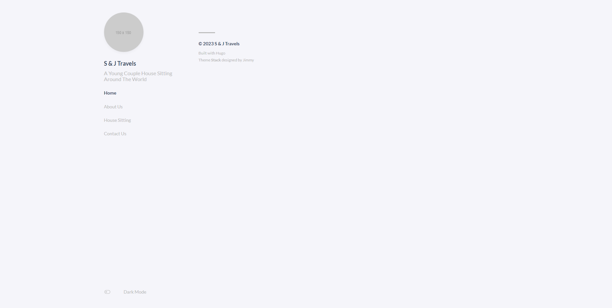
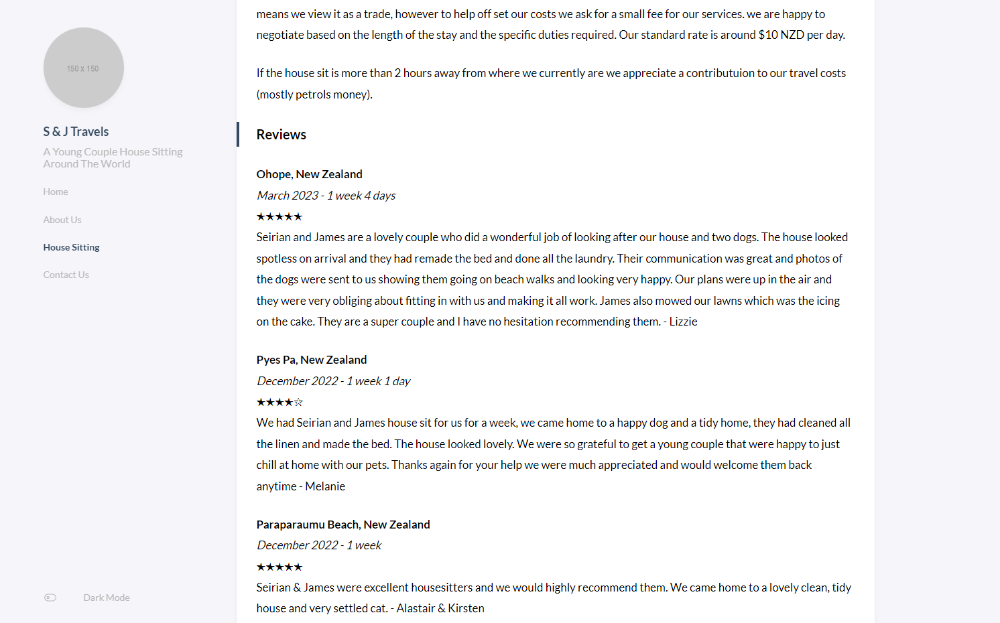

I just created a website for me and my partners travels as well as house sitting.
Overall the experience was great. I used Hugo for the static site generator, Stack as the theme and then netlify for the deployment.
You can find the website at: sjtravels.netlify.app. This could quite possibly change in the future as we decide to splash out and buy a domain name.
Everything about this from starting the website setting up the theme and deploying it went smoothly. Especially considering that the whole thing was free.
It makes me think about this website that maybe I should be moving it over to Hugo. The only things keeping me from doing that is wanting to be able to write my posts in rmd and then have it rendered and displayed as rendered html on the website. This is possible but is a pain which is why my website is setup the way it is. I will think about changing this website given how easy the process was but that is a project for another day.
Requirements
The requirements for this sjtravels website were as such:
- Free
- Good looking
- Easy to use for non tech person (as my partner is non techie).
After thinking about it using a static website was the obvious solution.
I knew that it could be done using Jekyll and GH pages like I have used with this site but wanted to try something a bit better. This is because Jekyll felt a bit clanky and not as smooth as I would like.
A quick look at Hugo website and it documentation made it my next solution and rather than messing around with using GH pages and non Jekyll (As pages by default is setup to use Jekyll).
Setting up
As I had never used hugo before I had to setup the software. Luckily all I had to do was follow this quick start guide and I was up and running in no time.
In turn getting my partners PC setup was also quite a breeze and she had to do everything from git to making a github account.
All of this smooth setting up was definitely giving me that good feeling that you get when things just work.
Site building
Of the things that took time in building the website we easily spent about 20% of the time just deciding on the theme. We went with a blog orientated theming. This was because the main use of the website is going to be displaying blog posts with only a few pages.
Because of this we didn’t want a single page site and instead wanted a home page that displayed recent blog posts and then a few other pages which would have about us and housesitting etc.
We settled on the Stack theme because it was easy to use and fit our requirements. I am sure there are lots more which would fit our requirements but it can be considered lucky this was the one that works. There is also a bonus that the atomic unit all the pages are folders meaning that storing assets needed for a post close by is quite easy.
As I have never used Hugo before so there was some warming up stage as I was just trying to figure out how Hugo and this theme works. Because of this it took another 20% of the time to get the basics configured for our website. As we got this sorted we had a website that looked something like this: 
From here we could move on to getting stuck in to actually create the website. This meant writing and a fair amount of it. Filling this out meant the website started to a take a form that was quite appealing. We were missing any photos as we hadn’t found any that ere suitable but regardless is was all coming together. This chunk of work easily took about 40% of the time.
Adding the contact forms and reviews was something that needed some more of my tech hat on.
Forms
Starting with what I know I went to pick up Google forms to make this contact form for our website. However almost immediately I knew that this wasn’t going to work the way that I wanted it to. What we needed was a very simple clean embedded form and what Google forms could offer was only large webpages that I would have to link to. This was not going to do. So I searched for a free backend to handle the form submission that my html form was going to have. This is where I found getforms.
getforms
getforms is free so it ticked that box. It also was easy to use so it ticked that box too! However it wast completely free. Many of the useful features that I wanted were locked behind a paywall. This meant that I couldn’t have custom form submission pages, deal with notification how I liked and etc.
Regardless though I setup the site to work with getforms and everything was fine.
This was until I came to the deployment stage this morning. Where I changed it all round to work with netlify forms instead. As it was free and I could do whatever I wanted with it.
Reviews
I would of ideally liked to have something that meant you could easily query all of our reviews. Something like the google reviews section on the internet. However sadly using this simple static builder meant that there wasn’t going to be an easy out of the box solutions. So instead I went to my trusty google sheets and collected all our reviews from the kiwihousesitter.co.nz. This meant that I now had the data somewhere I wanted. Since time was short I really came up with a terrible clunky solutions.
Which was.
Turning the sheets data into md and copying into the website. I know it is a real shame that something cool could of happened but instead I used copy and paste. Coming back to this and linking everything up to be automatic would be wonderful.
function onOpen() {
let ui = SpreadsheetApp.getUi();
ui.createMenu("Custom features").addItem("generate markdown", 'generateMD').addToUi()
}
function generateMD() {
let sheet = SpreadsheetApp.getActiveSheet();
let data = sheet.getDataRange().getValues();
let MDstring = "";
data.slice(1).forEach(function(row) {
MDstring = MDstring + convertReviewToMD({name: row[0], location: row[1], dates: row[2], duration: row[3], rating: row[4], review: row[5]}) + " \n\n";
})
//SpreadsheetApp.getUi().alert(MDstring);
console.log(MDstring)
}
function convertReviewToMD(review) {
return [
"__" + review.location + "__",
'_' + review.dates + ' - ' + review.duration + '_',
convertRatingToString(review.rating),
review.review + ' - ' + review.name
].join(" \n")
}
function convertRatingToString(rating) {
let ratingRounded = Math.round(rating);
let string ="";
for (let i = 0; i < ratingRounded; i ++) {
string = string + "★"
}
for (let i = 0; i < 5-ratingRounded; i ++) {
string = string + "☆"
}
return string
}This gives you a string in the console and you can simply add it to the House sitting page md file.
I also found out that the half star unicode character is not supported somewhere in the website chain so the star rating had to be rounded to the nearest half.
Regardless of how it was made it did come out looking not half bad.

Deploying
Now that we had the website we had to deploy it. I started by creating an account with netlify which was easy and then I gave it permissions to my repository and then I well accidentally deployed it.
It was just too darn easy. Well it wasn’t really deployed properly it had a weird as domain name (flocking-cats-1234 or something) and also the website was only showing an error. I went back and give it the ‘hugo’ build command I had ignored when first logging in and then it did work. Just Like That!
When I pushed to the main it updated the build. When I added a PR it made a preview. When I did something it just worked.
Very Very impressive I thought.
I kept seeing on the home page as I was looking around that there were forms so I had a look and in changing a single line of code set it up to use netlify instead. As it just automatically found the form and handled it which was very smart of it. The thing about netlify instead of getforms is that nothing was annoying locked behind a paywall. Instead it was simply capped. That’s alright because I don’t really expect any to actually be using our form let alone more than 50 times a month.
Getting the submission page to work did take more time than I would have liked but it was mostly due to my complete lack of knowledge rather than anything else.
The deployment process was barely a process at all. It was a few button clicks no headaches and our website was live.
This has left me feeling quite impressed with these web tools. As I never get near web technologies or anything to do with web development having this small detour into building a new website go so flawlessly was quite satisfying. Now as you might expect I really want to switch over my current website to this so that everything just works for me too.